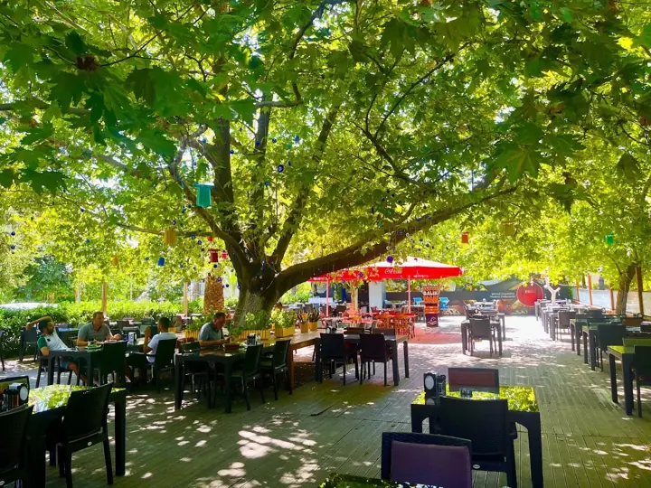

Kahvaltı
Güne çınarların gölgesinde başlayın.

Akçay · Her gün 24 saat açık
Bahçede kahvaltı, taş fırından pide, fenerler altında akşam yemeği.
Ege Garden’da

Güne çınarların gölgesinde başlayın.

Taş fırından pide, ızgara ve bahçede akşam yemeği.

Kaç kişi olacağınızı ve özel gününüzü masa talebine ekleyin.
Akçay · Balıkesir